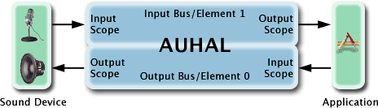

| ADC Home > Reference Library > Technical Notes > Audio > Core Audio > | |
|
An application can use the Hardware Abstraction Layer's (HAL) AudioOutputUnit to interface to a single audio device. The AudioOutputUnit (AUHAL) unit sits on top of an The AUHAL can be used to capture input from an audio device by following these steps: 1.Open an AUHAL 2.Enable the AUHAL for input. 3.Set the default input device as the current input device of the AUHAL. 4.Obtain the device format and specify the audio format you desire. 5.Create the input callback and register it with the AUHAL. 6.Allocate necessary buffers. 7.Initialize & start the AUHAL. These steps are illustrated in depth throughout this technote. Creating an AudioOutputUnitYou must first obtain an AudioOutputUnit by using a Component Description, as you would when attempting to obtain any other Audio Unit. Listing 1: How to open an AudioOutputUnit
Component comp;
ComponentDescription desc;
//There are several different types of Audio Units.
//Some audio units serve as Outputs, Mixers, or DSP
//units. See AUComponent.h for listing
desc.componentType = kAudioUnitType_Output;
//Every Component has a subType, which will give a clearer picture
//of what this components function will be.
desc.componentSubType = kAudioUnitSubType_HALOutput;
//all Audio Units in AUComponent.h must use
//"kAudioUnitManufacturer_Apple" as the Manufacturer
desc.componentManufacturer = kAudioUnitManufacturer_Apple;
desc.componentFlags = 0;
desc.componentFlagsMask = 0;
//Finds a component that meets the desc spec's
comp = FindNextComponent(NULL, &desc);
if (comp == NULL) exit (-1);
//gains access to the services provided by the component
OpenAComponent(comp, &InputUnit);
A quick word on Audio Unit connectionsAudio Units embody the concept of a direct connection between two different Audio Units. When an Audio Unit is asked to produce data, it can receive data from either a callback function, or another Audio Unit connected to it. For an example of a connection, if we had two Audio Units A1 and A2, where A1 is connected to A2 ( A1-->A2 ). If A2 is asked to produce data, the data stream will essentially be "pulled" from A1 to A2 to process. Therefore, connections between Audio Units must share the same audio stream format. For more information on Audio Units and connections please refer to chapter 3 of the document Audio and MIDI on Mac OS X . Figure 1: The signal flow of the AUHAL  Figure 1 illustrates the flow of audio data from audio devices to and from your application. Your application may connect an audio unit to either element (bus) of the AUHAL to simplify operations. Thus, in the case when you are using an audio unit as a source to output audio to a device, use the following connection: Table 1: Output audio to a device
When you want to get the audio device's input data, the connection should be: Table 2: Capture audio into a device
Of course, for a device like the Built-in Audio device that provides both input and output, a software playthrough mechanism can be established simply by creating the following connection: Table 3: Simple Software playthrough
One could also do any number of arbitrary processing operations to the audio from input to output by inserting one or more audio units between the input and output. So, lets take an example where you want to process the Built-in Audio input with a multiband compressor Audio Unit. You can do this by creating the following connections: Table 4: Processing the Built-in Audio's input with a multiband compressor Audio Unit.
The AUGraph APIs (in AudioToolbox.framework) can manage these connections for you. An If you have two separate audio devices, two AUHALs will be required. However, because each AUHAL is going to run on its own separate I/O proc, you cannot make a direct connection between the two AUHALs. You must use a notification mechanism to notify the output device that data has arrived then pass the data through. Note: Please note only one AudioOutputUnit can be used per AUGraph. Enabling IOAfter creating the AUHAL object, you must enable IO on the input scope of the Audio Unit to obtain device input. Input must be explicitly enabled with the Listing 2: Enabling input and disabling output for an AudioOutputUnit
UInt32 enableIO;
UInt32 size=0;
//When using AudioUnitSetProperty the 4th parameter in the method
//refer to an AudioUnitElement. When using an AudioOutputUnit
//the input element will be '1' and the output element will be '0'.
enableIO = 1;
AudioUnitSetProperty(InputUnit,
kAudioOutputUnitProperty_EnableIO,
kAudioUnitScope_Input,
1, // input element
&enableIO,
sizeof(enableIO));
enableIO = 0;
AudioUnitSetProperty(InputUnit,
kAudioOutputUnitProperty_EnableIO,
kAudioUnitScope_Output,
0, //output element
&enableIO,
sizeof(enableIO));
Setting the current device of the AudioOutputUnitThe AUHAL must have a device it will interface with. In this example, we will select the system's default input device for our current device. Listing 3: How to set the current device of the AudioOutputUnit to the default input device
OSStatus SetDefaultInputDeviceAsCurrent(){
UInt32 size;
OSStatus err =noErr;
size = sizeof(AudioDeviceID);
AudioDeviceID inputDevice;
err = AudioHardwareGetProperty(kAudioHardwarePropertyDefaultInputDevice,
&size,
&inputDevice);
if (err)
return err;
err =AudioUnitSetProperty(InputUnit,
kAudioOutputUnitProperty_CurrentDevice,
kAudioUnitScope_Global,
0,
&inputDevice,
sizeof(inputDevice));
return err;
}
What about the audio data format?The AUHAL flattens audio data streams of a device into a single de-interleaved stream for both input and output. AUHALs have a built-in For outputting data to an audio device the format is always expressed on the output scope of the AUHAL's Element 0. The audio device format can be obtained by using For obtaining input from a device, the device format is always expressed on the input scope of the AUHAL's Element 1. Therefore, you must set your desired format to the output scope of the AUHAL's Element 1. The internal Listing 4: Setting up the desired 'input' format
CAStreamBasicDescription DeviceFormat;
CAStreamBasicDescription DesiredFormat;
//Use CAStreamBasicDescriptions instead of 'naked'
//AudioStreamBasicDescriptions to minimize errors.
//CAStreamBasicDescription.h can be found in the CoreAudio SDK.
UInt32 size = sizeof(CAStreamBasicDescription);
//Get the input device format
AudioUnitGetProperty (InputUnit,
kAudioUnitProperty_StreamFormat,
kAudioUnitScope_Input,
1,
&DeviceFormat,
&size);
//set the desired format to the device's sample rate
DesiredFormat.mSampleRate = DeviceFormat.mSampleRate;
//set format to output scope
AudioUnitSetProperty(
InputUnit,
kAudioUnitProperty_StreamFormat,
kAudioUnitScope_Output,
1,
&DesiredFormat,
sizeof(CAStreamBasicDescription);
Channel MappingIf the data format between the audio device's channels and the desired format's channels do not correspond to a 1:1 ratio, channel mapping is needed. Channel mapping will specify what channels of the device your audio unit will interact with. This only needs to be set if you intend to use any setting other than the default mapping. Table 5: Default Channel Map (channel mapping not needed)
For example, we have a 4-channel device that we are using for input, but we only desire channels 2 and 3 of the device for stereo input. We must assign (map) the channels that we want from the device to the channels of the AUHAL. To create a channel map for our AUHAL, you must make an array of SInt32 for every *destination* of the map. Each element in the array of Sint32 will either refer to the index of the source's channels to be routed to the destination, or -1 meaning "no source". In this example, we would create an array of 2 elements and initialize the values to -1. For the channels that we would like to map, we set the value of the element in the channel map array to 2 & 3. As a result, our channel map is [2,3]. Table 6: 4 -> 2 Channel Map
Listing 5: An example of 4 -> 2 channel mapping for input
SInt32 *channelMap =NULL;
UInt32 numOfChannels = DesiredFormat.mChannelsPerFrame; //2 channels
UInt32 mapSize = numOfChannels *sizeof(SInt32);
channelMap = (SInt32 *)malloc(size);
//for each channel of desired input, map the channel from
//the device's output channel.
for(UInt32 i=0;i<numOfChannels;i++)
{
channelMap[i]=-1;
}
//channelMap[desiredInputChannel] = deviceOutputChannel;
channelMap[0] = 2;
channelMap[1] = 3;
AudioUnitSetProperty(InputUnit,
kAudioOutputUnitProperty_ChannelMap,
kAudioUnitScope_Output,
1,
channelMap,
size);
free(channelMap);
Creating an Input proc for an AudioOutputUnitNext, you must register the input procedure for the AUHAL. This procedure will be called when the AUHAL has received new data from your input device. Listing 6: Creating an Input proc for an AudioOutputUnit
void MyInputCallbackSetup()
{
AURenderCallbackStruct input;
input.inputProc = InputProc;
input.inputProcRefCon = 0;
AudioUnitSetProperty(
InputUnit,
kAudioOutputUnitProperty_SetInputCallback,
kAudioUnitScope_Global,
0,
&input,
sizeof(input));
}
Initializing and Starting the AudioOutputUnitThe AUHAL is now set up to receive input from a device. You must initialize and start the Audio Unit to begin acquiring data. Listing 7: Starting the AUHAL
OSStatus InitAndStartAUHAL()
{
OSStatus err= noErr;
err = AudioUnitInitialize(InputUnit);
if(err)
return err;
err = AudioOutputUnitStart(InputUnit);
return err;
}
Acquiring data from the AudioOutputUnitThe AUHAL is an Audio Unit that can receive and send audio data to an audio device. To receive audio from the AUHAL, you must get it from the output scope of the Audio Unit. In practice, this is done by a client calling In our example, we will call Listing 8: Using AudioUnitRender to obtain data
AudioBufferList * theBufferList;
/* allocated to hold buffer data */
OSStatus InputProc(
void *inRefCon,
AudioUnitRenderActionFlags *ioActionFlags,
const AudioTimeStamp *inTimeStamp,
UInt32 inBusNumber,
UInt32 inNumberFrames,
AudioBufferList * ioData)
{
OSStatus err =noErr;
err= AudioUnitRender(InputUnit,
ioActionFlags,
inTimeStamp,
inBusNumber, //will be '1' for input data
inNumberFrames, //# of frames requested
theBufferList);
return err;
}
ConclusionUsing the AUHAL to interface to an audio device greatly simplifies the interaction between applications and audio devices. This Audio Unit can assist audio developers in getting audio device information, as well as transporting and acquiring audio data. Sample Code, References, and NotesSample Code - RecordAudioToFileSample Code - ComplexPlayThru Sample Code - SimplePlayThru Core Audio Preliminary doc Audio and MIDI on Mac OS X -May 2001 Note: System Requirements: Panther and Jaguar systems with QuickTime v6.5 installed. Document Revision History
Posted: 2006-07-25 |
|